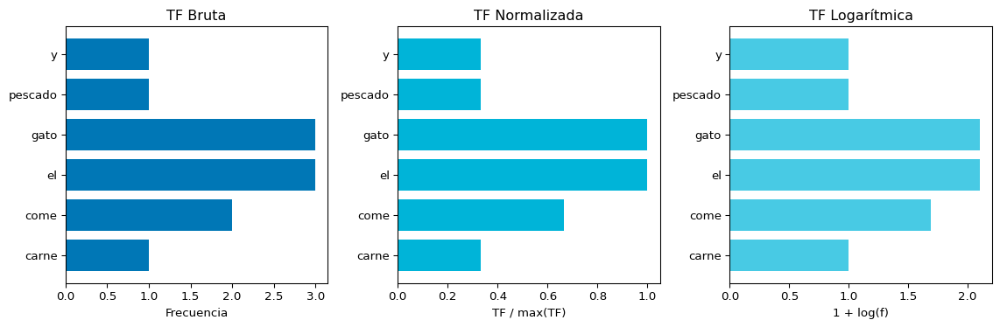
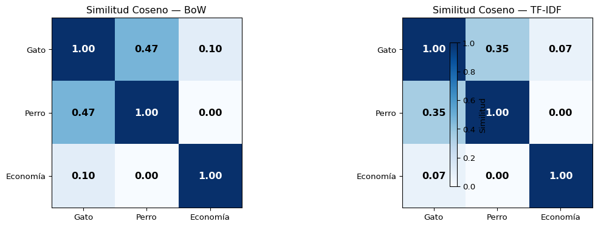

S2: TF-IDF — Encontrando lo Relevante en un Documento
Prof. Francisco Suárez
Universidad Católica Boliviana
2026-03-11
Agenda de Hoy
Primera Parte
📝 Repaso: Bag of Words y sus limitaciones
📊 Term Frequency (TF)
📉 Inverse Document Frequency (IDF)
Segunda Parte
⚡ TF-IDF: La combinación
🛠️ TF-IDF con scikit-learn
🔍 Aplicaciones prácticas
Bloque 1: Repaso y Motivación
Repaso: Bag of Words
En la sesión anterior representamos documentos como vectores de frecuencias:
from sklearn.feature_extraction.text import CountVectorizerimport pandas as pddocumentos = ["el gato come pescado","el perro come carne","el gato y el perro juegan"]vectorizer = CountVectorizer()X = vectorizer.fit_transform(documentos)df = pd.DataFrame( X.toarray(), columns=vectorizer.get_feature_names_out(), index=[f"Doc {i+1}"for i inrange(len(documentos))])print(df.to_string())
En BoW, “el” y “inteligencia” tienen el mismo peso si aparecen la misma cantidad de veces.
Doc: "El procesamiento de lenguaje natural es el futuro de la inteligencia artificial"
Palabra
Frecuencia
el
2
de
2
inteligencia
1
artificial
1
¿Cuáles son más informativas? 💡
“el”, “de”, “es”, “la” → aparecen en todos los documentos
“inteligencia”, “artificial” → aparecen en pocos documentos
. . .
Intuición Clave
Una palabra que aparece en muchos documentos es menos informativa que una que aparece en pocos.
Demostración del Problema
from sklearn.feature_extraction.text import CountVectorizerfrom sklearn.metrics.pairwise import cosine_similarityimport numpy as npcorpus = ["el gato es un animal doméstico y el gato es independiente","el perro es un animal doméstico y el perro es leal","la economía del país es compleja y la inflación es alta",]vectorizer = CountVectorizer()X = vectorizer.fit_transform(corpus)sim = cosine_similarity(X)print("Similitud Coseno con BoW:")print(f" Gato vs Perro (animales): {sim[0][1]:.3f}")print(f" Gato vs Economía: {sim[0][2]:.3f}")print(f" Perro vs Economía: {sim[1][2]:.3f}")
Similitud Coseno con BoW:
Gato vs Perro (animales): 0.688
Gato vs Economía: 0.267
Perro vs Economía: 0.267
Las palabras comunes (“el”, “es”, “un”, “y”) inflan la similitud entre documentos que no tienen nada que ver.
Solución: TF-IDF
Ponderar las palabras por su importancia relativa en el corpus.
Bloque 2: Term Frequency (TF)
¿Qué es Term Frequency?
La frecuencia del término mide qué tan frecuente es una palabra dentro de un documento específico.
\[\text{TF}(t, d) = \begin{cases} 1 & \text{si } t \in d \\ 0 & \text{si } t \notin d \end{cases}\]
Solo presencia o ausencia.
TF en la Práctica
import numpy as npdocumento ="el gato el gato el gato come pescado y come carne"palabras = documento.split()vocabulario =sorted(set(palabras))frecuencias = {v: palabras.count(v) for v in vocabulario}print(f"Documento: '{documento}'")print(f"Total palabras: {len(palabras)}\n")print(f"{'Término':<12}{'Bruta':>8}{'Normalizada':>12}{'Log':>8}{'Binaria':>8}")print("-"*52)max_freq =max(frecuencias.values())for termino in vocabulario: f = frecuencias[termino] tf_bruta = f tf_norm = f / max_freq tf_log =1+ np.log(f) if f >0else0 tf_bin =1if f >0else0print(f"{termino:<12}{tf_bruta:>8d}{tf_norm:>12.3f}{tf_log:>8.3f}{tf_bin:>8d}")
Documento: 'el gato el gato el gato come pescado y come carne'
Total palabras: 11
Término Bruta Normalizada Log Binaria
----------------------------------------------------
carne 1 0.333 1.000 1
come 2 0.667 1.693 1
el 3 1.000 2.099 1
gato 3 1.000 2.099 1
pescado 1 0.333 1.000 1
y 1 0.333 1.000 1
Problema
TF por sí solo no resuelve nada: “el” sigue teniendo la frecuencia más alta.
Visualización de TF
Code
import matplotlib.pyplot as pltimport numpy as npterminos =list(frecuencias.keys())freqs =list(frecuencias.values())max_f =max(freqs)fig, axes = plt.subplots(1, 3, figsize=(12, 4))# TF Brutaaxes[0].barh(terminos, freqs, color='#0077b6')axes[0].set_title('TF Bruta', fontsize=12)axes[0].set_xlabel('Frecuencia')# TF Normalizadatf_norm = [f / max_f for f in freqs]axes[1].barh(terminos, tf_norm, color='#00b4d8')axes[1].set_title('TF Normalizada', fontsize=12)axes[1].set_xlabel('TF / max(TF)')# TF Logarítmicatf_log = [1+ np.log(f) if f >0else0for f in freqs]axes[2].barh(terminos, tf_log, color='#48cae4')axes[2].set_title('TF Logarítmica', fontsize=12)axes[2].set_xlabel('1 + log(f)')plt.tight_layout()plt.show()

La TF logarítmica comprime las diferencias: “el” (3 veces) ya no domina tanto.
Bloque 3: Inverse Document Frequency (IDF)
La Intuición detrás de IDF
Palabras comunes = poco informativas
Si una palabra aparece en todos los documentos, no sirve para distinguirlos.
Corpus de 1000 documentos:"el" → aparece en 1000 docs 😴"perro" → aparece en 50 docs 🤔"quásar" → aparece en 2 docs 🤩
Palabras raras = muy informativas
Una palabra que aparece en pocos documentos es más útil para identificar de qué trata un documento.
Principio IDF
Penalizar las palabras que aparecen en muchos documentos y favorecer las que aparecen en pocos.
Un término tiene TF-IDF bajo cuando es raro en el doc O común en el corpus.
TF-IDF: Diagrama Conceptual
Code
flowchart LR A["📄 Documento d"] --> B["TF(t,d)<br>Frecuencia local"] C["📚 Corpus"] --> D["IDF(t)<br>Rareza global"] B --> E["✖️ Multiplicar"] D --> E E --> F["📊 TF-IDF(t,d)<br>Peso final"] style A fill:#cfe2ff,color:#000 style C fill:#d1e7dd,color:#000 style B fill:#48cae4,color:#000 style D fill:#2a9d8f,color:#fff style E fill:#ffd166,color:#000 style F fill:#0077b6,color:#fff,stroke:#023e8a,stroke-width:3px
flowchart LR
A["📄 Documento d"] --> B["TF(t,d)<br>Frecuencia local"]
C["📚 Corpus"] --> D["IDF(t)<br>Rareza global"]
B --> E["✖️ Multiplicar"]
D --> E
E --> F["📊 TF-IDF(t,d)<br>Peso final"]
style A fill:#cfe2ff,color:#000
style C fill:#d1e7dd,color:#000
style B fill:#48cae4,color:#000
style D fill:#2a9d8f,color:#fff
style E fill:#ffd166,color:#000
style F fill:#0077b6,color:#fff,stroke:#023e8a,stroke-width:3px
Escenario
TF
IDF
TF-IDF
Interpretación
Frecuente en doc, raro en corpus
Alto
Alto
Muy alto
Término clave del documento
Frecuente en doc, común en corpus
Alto
Bajo
Medio
Palabra funcional frecuente
Raro en doc, raro en corpus
Bajo
Alto
Medio-bajo
Presente pero no dominante
Raro en doc, común en corpus
Bajo
Bajo
Muy bajo
Poco relevante
Cálculo Manual Paso a Paso
import numpy as npcorpus = ["el gato come pescado","el perro come carne","el gato y el perro juegan",]# Tokenizardocs_tokenizados = [doc.split() for doc in corpus]vocabulario =sorted(set(w for doc in docs_tokenizados for w in doc))N =len(corpus)print(f"Vocabulario: {vocabulario}")print(f"N = {N} documentos\n")# Calcular TF, DF, IDF y TF-IDFprint(f"{'Término':<10}{'TF(doc1)':>8}{'df(t)':>6}{'IDF':>8}{'TF-IDF(doc1)':>12}")print("-"*48)for t in vocabulario: tf = docs_tokenizados[0].count(t) # TF para doc 1 df =sum(1for doc in docs_tokenizados if t in doc) idf = np.log(N / df) tfidf = tf * idfprint(f"{t:<10}{tf:>8d}{df:>6d}{idf:>8.3f}{tfidf:>12.3f}")
“gato” y “pescado” tienen los pesos TF-IDF más altos para el Doc 1. Son los términos que mejor lo identifican.
Bloque 5: TF-IDF con scikit-learn
TfidfVectorizer
scikit-learn ofrece TfidfVectorizer que calcula todo automáticamente:
from sklearn.feature_extraction.text import TfidfVectorizerimport pandas as pdcorpus = ["el gato come pescado fresco","el perro come carne roja","el gato y el perro juegan juntos","el pescado fresco es delicioso",]tfidf = TfidfVectorizer()X = tfidf.fit_transform(corpus)df = pd.DataFrame( X.toarray().round(3), columns=tfidf.get_feature_names_out(), index=[f"Doc {i+1}"for i inrange(len(corpus))])print(df.to_string())
TfidfVectorizer normaliza cada vector de documento para que tenga norma unitaria (\(||v|| = 1\)), lo que facilita la comparación por similitud coseno.
BoW vs. TF-IDF: Comparación Directa
from sklearn.feature_extraction.text import CountVectorizer, TfidfVectorizerimport pandas as pdcorpus = ["el gato duerme en la casa y el gato ronronea","el perro juega en el parque y el perro ladra","la economía global muestra signos de recuperación",]# BoWcv = CountVectorizer()X_bow = cv.fit_transform(corpus)# TF-IDFtv = TfidfVectorizer()X_tfidf = tv.fit_transform(corpus)print("=== Bag of Words ===")df_bow = pd.DataFrame(X_bow.toarray(), columns=cv.get_feature_names_out(), index=["Gato", "Perro", "Economía"])print(df_bow.to_string())print("\n=== TF-IDF ===")df_tfidf = pd.DataFrame(X_tfidf.toarray().round(3), columns=tv.get_feature_names_out(), index=["Gato", "Perro", "Economía"])print(df_tfidf.to_string())
=== Bag of Words ===
casa de duerme economía el en gato global juega la ladra muestra parque perro recuperación ronronea signos
Gato 1 0 1 0 2 1 2 0 0 1 0 0 0 0 0 1 0
Perro 0 0 0 0 3 1 0 0 1 0 1 0 1 2 0 0 0
Economía 0 1 0 1 0 0 0 1 0 1 0 1 0 0 1 0 1
=== TF-IDF ===
casa de duerme economía el en gato global juega la ladra muestra parque perro recuperación ronronea signos
Gato 0.309 0.00 0.309 0.00 0.470 0.235 0.618 0.00 0.00 0.235 0.00 0.00 0.00 0.000 0.00 0.309 0.00
Perro 0.000 0.00 0.000 0.00 0.638 0.213 0.000 0.00 0.28 0.000 0.28 0.00 0.28 0.559 0.00 0.000 0.00
Economía 0.000 0.39 0.000 0.39 0.000 0.000 0.000 0.39 0.00 0.297 0.00 0.39 0.00 0.000 0.39 0.000 0.39
El Impacto en la Similitud
from sklearn.metrics.pairwise import cosine_similarityimport numpy as np# Similitud con BoWsim_bow = cosine_similarity(X_bow)# Similitud con TF-IDFsim_tfidf = cosine_similarity(X_tfidf)etiquetas = ["Gato", "Perro", "Economía"]print("Similitud Coseno — BoW vs TF-IDF:\n")print(f"{'Par':<24}{'BoW':>8}{'TF-IDF':>8}{'Diferencia':>10}")print("-"*52)for i inrange(len(etiquetas)):for j inrange(i+1, len(etiquetas)): diff = sim_tfidf[i][j] - sim_bow[i][j] signo ="↓"if diff <0else"↑"print(f"{etiquetas[i]+' vs '+etiquetas[j]:<24}{sim_bow[i][j]:>8.3f}{sim_tfidf[i][j]:>8.3f}{diff:>+9.3f}{signo}")
Similitud Coseno — BoW vs TF-IDF:
Par BoW TF-IDF Diferencia
----------------------------------------------------
Gato vs Perro 0.471 0.350 -0.121 ↓
Gato vs Economía 0.105 0.070 -0.035 ↓
Perro vs Economía 0.000 0.000 +0.000 ↑
Resultado Clave
TF-IDF reduce la similitud espuria causada por palabras comunes (“el”, “en”, “y”), haciendo las comparaciones más significativas.
Visualización: BoW vs TF-IDF
Code
import matplotlib.pyplot as pltimport numpy as npfig, axes = plt.subplots(1, 2, figsize=(12, 4))etiquetas = ["Gato", "Perro", "Economía"]for ax, sim, titulo in [(axes[0], sim_bow, "Similitud Coseno — BoW"), (axes[1], sim_tfidf, "Similitud Coseno — TF-IDF")]: im = ax.imshow(sim, cmap='Blues', vmin=0, vmax=1) ax.set_xticks(range(len(etiquetas))) ax.set_xticklabels(etiquetas, fontsize=10) ax.set_yticks(range(len(etiquetas))) ax.set_yticklabels(etiquetas, fontsize=10) ax.set_title(titulo, fontsize=12)for i inrange(len(etiquetas)):for j inrange(len(etiquetas)): color ='white'if sim[i][j] >0.5else'black' ax.text(j, i, f'{sim[i][j]:.2f}', ha='center', va='center', fontsize=12, fontweight='bold', color=color)plt.colorbar(im, ax=axes, label='Similitud', shrink=0.8)plt.tight_layout()plt.show()

Parámetros de TfidfVectorizer
from sklearn.feature_extraction.text import TfidfVectorizercorpus = ["El procesamiento de lenguaje natural es apasionante","El lenguaje natural humano es complejo y fascinante","La inteligencia artificial procesa el lenguaje de forma eficiente","El aprendizaje automático usa datos para mejorar modelos","Los datos son el recurso principal de la inteligencia artificial"]# Parámetros principalestfidf = TfidfVectorizer( max_features=15, # Limitar vocabulario min_df=1, # Frecuencia mínima de documentos max_df=0.9, # Frecuencia máxima de documentos (porcentaje) ngram_range=(1, 2), # Unigramas y bigramas sublinear_tf=True, # Usar 1 + log(tf) en vez de tf norm='l2', # Normalización L2 (default) smooth_idf=True, # Sumar 1 al numerador y denominador del IDF)X = tfidf.fit_transform(corpus)print(f"Forma: {X.shape} (documentos × términos)")print(f"Vocabulario: {tfidf.get_feature_names_out().tolist()}")
Usa \(1 + \log(\text{tf})\) en vez de \(\text{tf}\) bruto. Recomendado en la mayoría de aplicaciones.
Encontrar las Palabras más Relevantes
from sklearn.feature_extraction.text import TfidfVectorizerimport numpy as npcorpus = ["Bolivia tiene una rica biodiversidad en sus regiones amazónicas","La economía boliviana depende de la exportación de gas natural","El fútbol boliviano celebra su liga profesional cada año","La inteligencia artificial transforma la medicina y la educación","Las redes neuronales profundas mejoran el reconocimiento de imágenes",]tfidf = TfidfVectorizer()X = tfidf.fit_transform(corpus)nombres = tfidf.get_feature_names_out()print("Top 3 términos más relevantes por documento:\n")for i, doc inenumerate(corpus): vector = X[i].toarray().flatten() top_indices = vector.argsort()[-3:][::-1] top_palabras = [(nombres[j], vector[j]) for j in top_indices]print(f"Doc {i+1}: {doc[:55]}...")for palabra, peso in top_palabras: barra ="█"*int(peso *30)print(f" {palabra:<20}{peso:.3f}{barra}")print()
Top 3 términos más relevantes por documento:
Doc 1: Bolivia tiene una rica biodiversidad en sus regiones am...
una 0.333 ██████████
tiene 0.333 ██████████
rica 0.333 ██████████
Doc 2: La economía boliviana depende de la exportación de gas ...
de 0.482 ██████████████
la 0.482 ██████████████
natural 0.299 ████████
Doc 3: El fútbol boliviano celebra su liga profesional cada añ...
su 0.340 ██████████
cada 0.340 ██████████
celebra 0.340 ██████████
Doc 4: La inteligencia artificial transforma la medicina y la ...
la 0.735 ██████████████████████
transforma 0.303 █████████
educación 0.303 █████████
Doc 5: Las redes neuronales profundas mejoran el reconocimient...
las 0.347 ██████████
mejoran 0.347 ██████████
neuronales 0.347 ██████████
Bloque 6: Aplicaciones Prácticas
Aplicación 1: Motor de Búsqueda Mejorado 🔍
Comparemos el buscador de la sesión anterior (BoW) con TF-IDF:
from sklearn.feature_extraction.text import CountVectorizer, TfidfVectorizerfrom sklearn.metrics.pairwise import cosine_similaritycorpus = ["La inteligencia artificial está transformando la medicina moderna","Los robots aprenden a cocinar platos gourmet con redes neuronales","El cambio climático afecta los glaciares de Bolivia","Python es el lenguaje más popular para ciencia de datos","Las redes neuronales artificiales imitan el cerebro humano","La deforestación en la Amazonía alcanza niveles récord","El aprendizaje automático mejora el diagnóstico médico",]# BoWcv = CountVectorizer()X_bow = cv.fit_transform(corpus)# TF-IDFtv = TfidfVectorizer()X_tfidf = tv.fit_transform(corpus)def buscar_comparado(consulta, top_n=3):"""Compara resultados BoW vs TF-IDF."""# BoW q_bow = cv.transform([consulta]) sim_bow = cosine_similarity(q_bow, X_bow).flatten()# TF-IDF q_tfidf = tv.transform([consulta]) sim_tfidf = cosine_similarity(q_tfidf, X_tfidf).flatten()print(f"🔍 Consulta: '{consulta}'\n")print(f"{'Rank':<5}{'BoW':>6}{'TF-IDF':>8} Documento")print("-"*70) idx_tfidf = sim_tfidf.argsort()[::-1][:top_n]for rank, idx inenumerate(idx_tfidf, 1):print(f" {rank}{sim_bow[idx]:.3f}{sim_tfidf[idx]:.3f}{corpus[idx][:55]}")buscar_comparado("inteligencia artificial medicina")
🔍 Consulta: 'inteligencia artificial medicina'
Rank BoW TF-IDF Documento
----------------------------------------------------------------------
1 0.548 0.585 La inteligencia artificial está transformando la medici
2 0.000 0.000 La deforestación en la Amazonía alcanza niveles récord
3 0.000 0.000 El aprendizaje automático mejora el diagnóstico médico
Aplicación 2: Clasificación de Texto
from sklearn.feature_extraction.text import CountVectorizer, TfidfVectorizerfrom sklearn.naive_bayes import MultinomialNBfrom sklearn.model_selection import cross_val_scoreimport numpy as np# Dataset: deportes vs. tecnologíatextos = ["el equipo ganó el partido de fútbol","el gol del delantero fue espectacular","el campeonato de tenis terminó ayer","el jugador se lesionó en el entrenamiento","el maratón de la ciudad fue un éxito deportivo","la empresa lanzó un nuevo teléfono inteligente","el procesador del computador es muy rápido","la inteligencia artificial avanza cada día","el software tiene un error crítico grave","la nube permite almacenar datos de forma segura",]etiquetas = ["deporte"]*5+ ["tecnología"]*5# Comparar BoW vs TF-IDFfor nombre, vec in [("BoW", CountVectorizer()), ("TF-IDF", TfidfVectorizer())]: X = vec.fit_transform(textos) clf = MultinomialNB() scores = cross_val_score(clf, X, etiquetas, cv=3)print(f"{nombre:8s} → Accuracy: {scores.mean():.2f} (±{scores.std():.2f})")
TF-IDF generalmente supera a BoW en tareas de clasificación porque reduce el ruido de las palabras comunes.
Aplicación 3: Extracción de Palabras Clave
from sklearn.feature_extraction.text import TfidfVectorizerarticulos = ["""Bolivia cuenta con una gran diversidad cultural y lingüística. El país tiene más de 30 idiomas nativos reconocidos oficialmente. El quechua y el aymara son los idiomas indígenas más hablados en Bolivia.""","""Las redes neuronales convolucionales son fundamentales en visión por computadora. Estas redes procesan imágenes mediante filtros y capas de convolución. Las redes convolucionales detectan patrones como bordes y texturas.""","""El cambio climático provoca el derretimiento de glaciares en los Andes. La temperatura global sigue aumentando cada década. Los glaciares tropicales de Bolivia han perdido más del 40 por ciento de su masa.""",]tfidf = TfidfVectorizer(max_features=50)X = tfidf.fit_transform(articulos)nombres = tfidf.get_feature_names_out()titulos = ["🇧🇴 Diversidad Lingüística", "🧠 Redes Neuronales", "🌡️ Cambio Climático"]print("Palabras clave extraídas con TF-IDF:\n")for i, titulo inenumerate(titulos): vector = X[i].toarray().flatten() top_idx = vector.argsort()[-5:][::-1] keywords = [(nombres[j], vector[j]) for j in top_idx]print(f"{titulo}:")for kw, score in keywords:print(f" • {kw:<20} ({score:.3f})")print()
Palabras clave extraídas con TF-IDF:
🇧🇴 Diversidad Lingüística:
• el (0.442)
• idiomas (0.387)
• bolivia (0.294)
• más (0.294)
• gran (0.194)
🧠 Redes Neuronales:
• redes (0.540)
• las (0.360)
• convolucionales (0.360)
• imágenes (0.180)
• mediante (0.180)
🌡️ Cambio Climático:
• glaciares (0.379)
• de (0.336)
• los (0.288)
• el (0.288)
• han (0.189)
Resumen Visual: BoW → TF-IDF
Code
flowchart TD A["📄 Documentos<br>crudos"] --> B["🧹 Preprocesamiento<br>(Semana 1)"] B --> C{"¿Qué representación?"} C -->|Frecuencia simple| D["📊 BoW<br>CountVectorizer"] C -->|Frecuencia ponderada| E["⚡ TF-IDF<br>TfidfVectorizer"] D --> F["🔢 Matriz DTM<br>(frecuencias)"] E --> G["🔢 Matriz TF-IDF<br>(pesos)"] F --> H["🤖 Modelo ML"] G --> H H --> I["📈 Clasificación<br>Búsqueda<br>Clustering"] style D fill:#48cae4,color:#000 style E fill:#0077b6,color:#fff,stroke:#023e8a,stroke-width:3px style G fill:#2a9d8f,color:#fff
flowchart TD
A["📄 Documentos<br>crudos"] --> B["🧹 Preprocesamiento<br>(Semana 1)"]
B --> C{"¿Qué representación?"}
C -->|Frecuencia simple| D["📊 BoW<br>CountVectorizer"]
C -->|Frecuencia ponderada| E["⚡ TF-IDF<br>TfidfVectorizer"]
D --> F["🔢 Matriz DTM<br>(frecuencias)"]
E --> G["🔢 Matriz TF-IDF<br>(pesos)"]
F --> H["🤖 Modelo ML"]
G --> H
H --> I["📈 Clasificación<br>Búsqueda<br>Clustering"]
style D fill:#48cae4,color:#000
style E fill:#0077b6,color:#fff,stroke:#023e8a,stroke-width:3px
style G fill:#2a9d8f,color:#fff
Ninguna de estas técnicas captura significado. “auto” y “carro” siguen siendo palabras completamente diferentes. La solución: embeddings densos (Semana 4).
Para la Próxima Clase 📚
Semana 2, S3: Información Mutua Puntual (PMI) y N-gramas
Aprenderemos a medir la asociación estadística entre pares de palabras: ¿qué palabras tienden a aparecer juntas?
Lectura:
Capítulo 6 (secciones 6.6-6.7): Speech and Language Processing (Jurafsky & Martin)